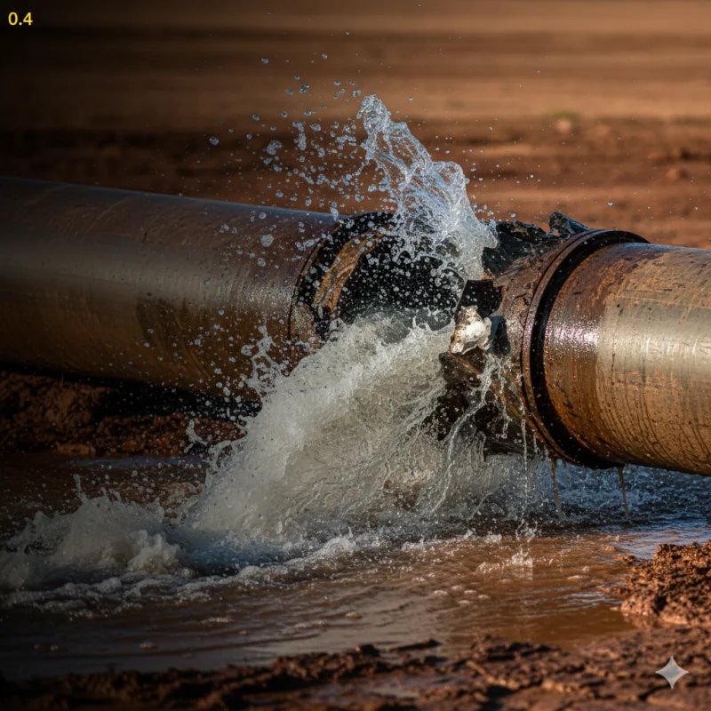

Plomería para el centro histórico, Chapultepec y Guadalupe: fugas en tubería galvanizada, drenajes antiguos de barro, baja presión por sarro y servicio a locales del primer cuadro. Llegamos en 30-60 minutos, 24/7.
WhatsApp: 52 667 392 2273 · Llamadas: 667 392 2273
Contactar por WhatsAppEl centro de Culiacán y su primer anillo no son como un fraccionamiento nuevo. Aquí la mayoría de las casas y edificios tienen entre 40 y 70 años: tubería galvanizada o de fierro con décadas de sarro, drenajes de barro invadidos por raíces y conexiones que ningún plomero improvisado quiere tocar. Trabajamos en la colonia Centro, Chapultepec y Guadalupe todas las semanas, conocemos estos sistemas viejos y llegamos con la herramienta correcta para no convertir una fuga pequeña en una demolición.
Sabemos abrir muros de adobe, ladrillo y losas antiguas sin dañar más de lo necesario
Liberamos roscas oxidadas y reparamos sin reventar el tramo contiguo
Estamos a minutos del primer cuadro, Chapultepec y Guadalupe, las 24 horas
Atendemos locales, mercados y oficinas del centro en horarios que no afectan tus ventas
El galvanizado de hace 50 años se corroe por dentro y fuga en las roscas. Reparamos el punto exacto o te cotizamos el cambio de tuberías a PPR o PEX.
El sarro reduce el diámetro interno de la tubería hasta dejarla casi cerrada. Diagnosticamos si conviene limpiar, cambiar el tramo o instalar equipo de presión.
Los drenajes de barro del centro histórico se fracturan y las raíces los invaden. Hacemos destape de drenajes con sonda, corte de raíces y cámara de inspección.
Reemplazamos sanitarios, lavabos y llaves descontinuadas adaptando las salidas viejas a medidas actuales sin romper todo el baño.
Baños de empleados, tarjas de cocina, tomas de agua y drenajes en locales comerciales, mercados y edificios de oficinas del centro.
Recibos de agua altos o humedad en muros de adobe y ladrillo: localizamos la fuga con equipo especializado antes de abrir.

La tubería galvanizada de 40-70 años se corroe por dentro: fugas recurrentes y baja presión son la señal
Chapultepec y Guadalupe son de las colonias residenciales más consolidadas de Culiacán: casas amplias, muchas remodeladas por fuera, pero con la instalación hidráulica original por dentro. Es el patrón que más vemos: una casa de los años 70 u 80 con cocina y baños renovados, conectados a la misma línea de galvanizado que ya da fugas recurrentes. En estos casos hacemos un diagnóstico honesto: si la línea todavía aguanta, reparamos el punto; si ya no, te conviene más un cambio de tramo con precio cerrado por escrito.
Lo mismo aplica para el drenaje: en estas colonias y en el centro histórico todavía hay albañales de barro fracturados que funcionan a medias hasta que una raíz los tapa por completo. Con la cámara de inspección ubicamos el punto exacto y solo se abre donde es necesario, no todo el patio.
El centro de Culiacán vive de su comercio: los mercados, las tiendas alrededor de la catedral, los restaurantes del Paseo del Ángel, oficinas y bodegas del primer cuadro. Un baño fuera de servicio o un drenaje desbordado significa perder ventas ese mismo día. Por eso atendemos locales con prioridad: trabajamos de madrugada o antes de tu apertura, dejamos el área funcionando y ofrecemos mantenimiento preventivo programado. Conoce el servicio completo en nuestra página de plomería comercial en Culiacán.
Envíanos foto o video por WhatsApp y te damos un estimado el mismo día. También puedes revisar nuestros precios de plomería.
Cotizar por WhatsAppEstas son las colonias del centro con página propia, por si quieres ver información específica de tu zona:
¿Tu colonia no aparece? Consulta el directorio completo de plomero por colonias en Culiacán — cubrimos toda la ciudad.
Las reparaciones en la zona centro van desde $500 MXN por trabajos sencillos, hasta $2,500-$8,000 MXN por fugas en galvanizado empotrado o cambios de tramo. Antes de iniciar confirmamos el precio final. Envía foto o video por WhatsApp al 667 392 2273 para un estimado sin compromiso.
Sí, es nuestra especialidad en el centro histórico, Chapultepec y Guadalupe. Trabajamos tubería galvanizada y de fierro de 40-70 años: reparamos fugas puntuales sin reventar el tramo y, cuando el sarro ya cerró la línea, proponemos el cambio a PPR, CPVC o PEX con presupuesto por escrito.
Llegamos en 30-60 minutos a la colonia Centro, Chapultepec, Guadalupe y todo el primer anillo. Atendemos 24/7, incluyendo madrugadas y festivos. Para emergencias, contáctanos por WhatsApp y te confirmamos tiempo de llegada de inmediato.
Sí, atendemos locales del primer cuadro, mercados, restaurantes y oficinas. Trabajamos en horarios fuera de operación para no interrumpir tus ventas y ofrecemos mantenimiento preventivo. Conoce más en plomería comercial.
Si es la primera fuga y la tubería conserva pared sana, una reparación puntual resuelve. Si ya tuviste 2-3 fugas en el mismo tramo en un año, o la presión bajó por sarro, lo más económico a mediano plazo es el cambio de tubería. Hacemos diagnóstico antes de recomendar.
"Mi casa en Chapultepec tiene más de 50 años y la tubería del baño no dejaba de fugar. Me explicaron por qué pasaba, cambiaron el tramo viejo y desde entonces cero problemas."
— Roberto C., Chapultepec"Tengo un local cerca del mercado y el drenaje se desbordó un viernes. Vinieron esa misma noche, lo destaparon y pude abrir el sábado sin problema."
— Lourdes M., Centro"En Guadalupe la presión del agua era casi nula. Revisaron la línea, encontraron el galvanizado tapado de sarro y lo cambiaron en un día. Excelente trabajo y limpio."
— Fernando S., GuadalupeContacta ahora por WhatsApp o teléfono. Llegamos en 30-60 minutos al centro, Chapultepec y Guadalupe.
Somos plomeros profesionales en Culiacán con más de 15 años de experiencia trabajando en casas y negocios de la zona centro. Conocemos las instalaciones antiguas del centro histórico, Chapultepec y Guadalupe, y contamos con herramienta especializada para tubería galvanizada, drenajes de barro y construcciones viejas.
Contáctanos por WhatsApp para servicio inmediato en el centro de Culiacán. Cuéntanos qué problema tienes y te daremos un estimado de precio y tiempo de llegada.
Enviar mensaje por WhatsApp